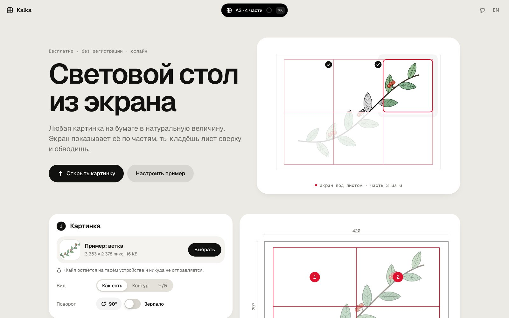
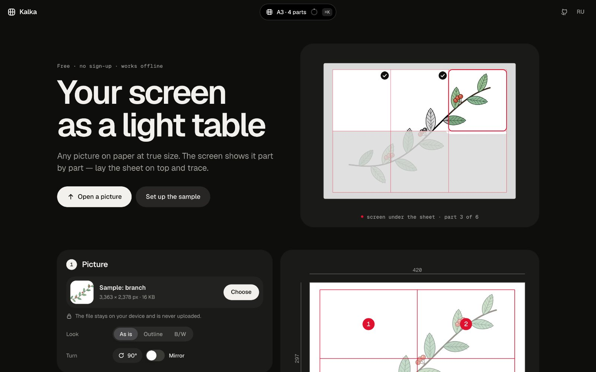

1kalkaВеб · PWA
Световой стол из экрана
Любая картинка переносится на бумагу в натуральную величину: экран показывает её по частям, ты кладёшь лист сверху и обводишь. Экран определяется сам, масштаб проверяется банковской картой.
- JPG · PNG · SVG · PDF
- A4…A0 и свой размер
- офлайн · RU/EN · ⌘K
- 25 unit + 15 e2e

